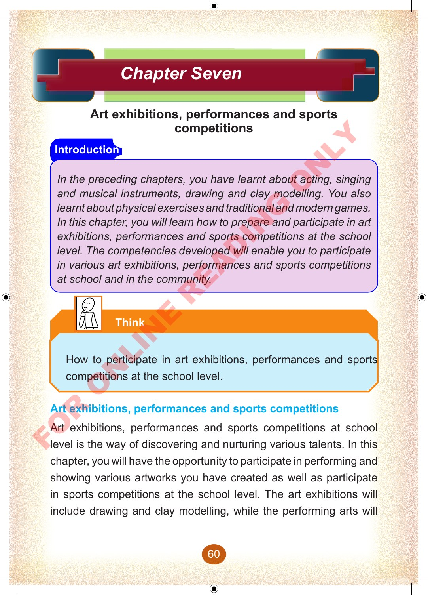
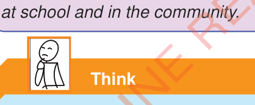

Chapter Seven
Art exhibitions, performances and sports competitions
Introduction
In the preceding chapters, you have learnt about acting, singing and musical instruments, drawing and clay modelling.
You also learnt about physical exercises and traditional and modern games.
In this chapter, you will learn how to prepare and participate in art exhibitions, performances and sports competitions at the school level.
The competencies developed will enable you to participate in various art exhibitions, performances and sports competitions at school and in the community.
Think
How to participate in art exhibitions, performances and sports competitions at the school level.
Art exhibitions, performances and sports competitions
Art exhibitions, performances and sports competitions at school level is the way of discovering and nurturing various talents.
In this chapter, you will have the opportunity to participate in performing and showing various artworks you have created as well as participate in sports competitions at the school level.
The art exhibitions will include drawing and clay modelling, while the performing arts will